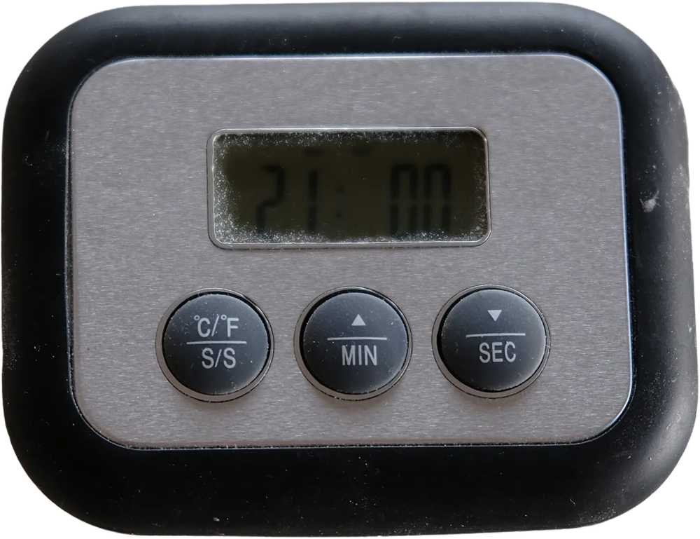
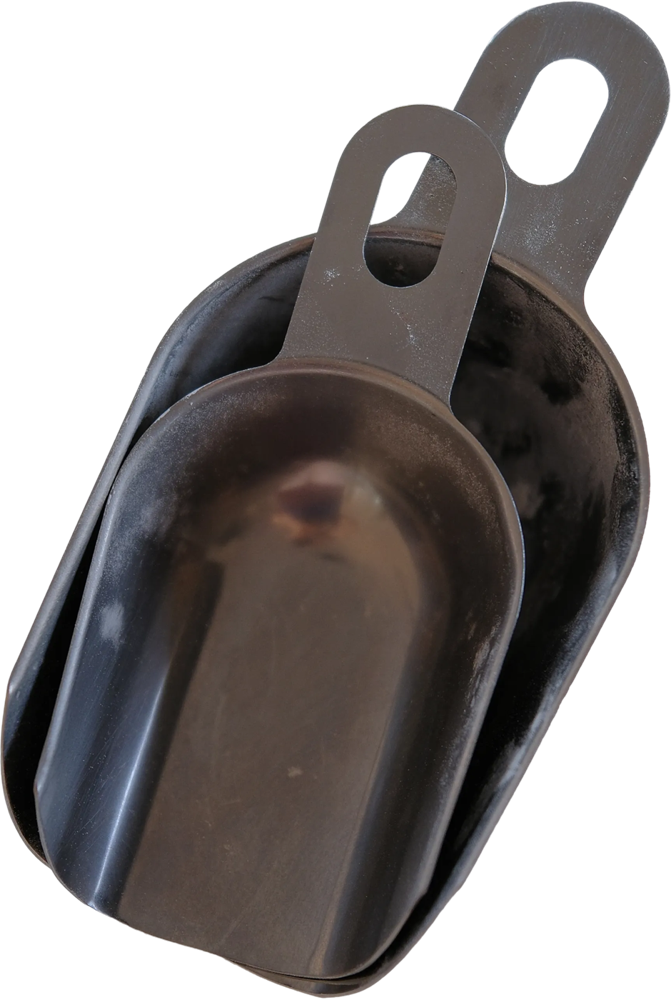

what you need
Everything on this page is from my own kitchen — the same things the bakery ran on, just fewer of them. Red tag = you need it on day one. Outline tag = nice, but the bread will still happen without it.

scale need
‹caption from the post› — to the gram. Cups measure volume; flour doesn't care about volume.

thermometer need
‹caption› — the one number nobody checks at home is 26 °C. This is how you check it.

bowls with lids need
‹caption› — straight sides make volume easy to read. A plate on top is a lid.

dutch oven need
‹caption› — steam without a steam oven. The single biggest upgrade to a home crust.

bannetons need
‹caption› — hold the shape overnight in the fridge. A bowl with a floured towel is the honest substitute.

scrapers need
‹caption› — soft one for the bowl, metal one for the table. Your hands will thank you.

oven mitts need
‹caption› — 250 °C cast iron. Mitts on. I mean it.

lame nice
‹caption› — a razor on a handle. Until then: the sharpest knife you own, at an angle.

cooling rack nice
‹caption› — air under the loaf, or the bottom goes soft. The oven rack works too.

timer nice
‹caption› — for the folds. You will forget the third one otherwise. Ask me how I know.

parchment & wrap nice
‹caption› — parchment to lower the dough into the pot, wrap to cover the banneton.

scoops nice
‹caption› — flour into the bowl without a snowstorm.

wooden spoons nice
‹caption› — for the starter. Metal is fine too, that's a myth for another week.
- aStand mixer. This dough is mixed by hand in four minutes.
- bProofing box. Your oven with the light on, or the top of the fridge.
- cBaking steel or stone. The dutch oven does the job.